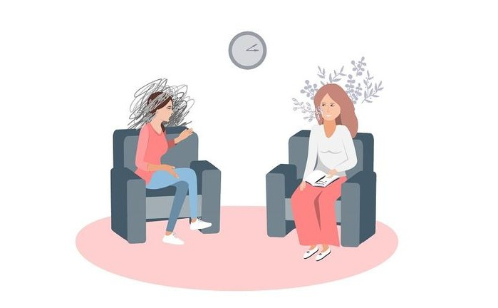

Где найти психолога бесплатно
Если у тебя нет возможности оплатить консультации, не стоит отказываться от помощи. В Казахстане и СНГ работают волонтёрские службы, университетские центры и горячие линии.
- 📞 Национальная горячая линия психологической помощи — работает круглосуточно.
- 💬 Онлайн-чаты поддержки — в Telegram и на сайтах благотворительных фондов.
- 🎓 Университеты, где студенты-психологи консультируют под супервизией преподавателей.
Не бойся обращаться — это не слабость, а забота о себе. Иногда один разговор может многое изменить.